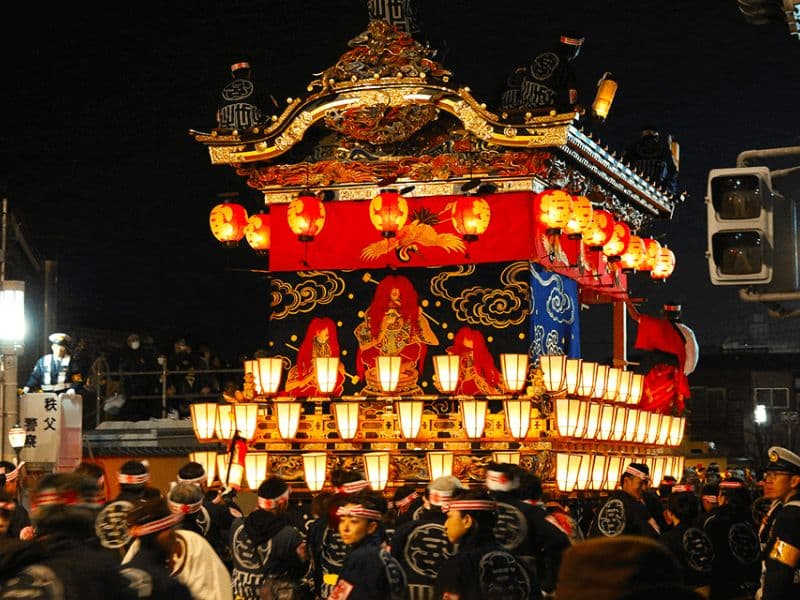
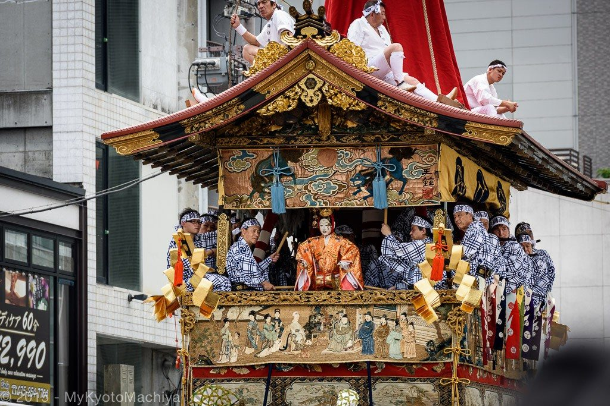
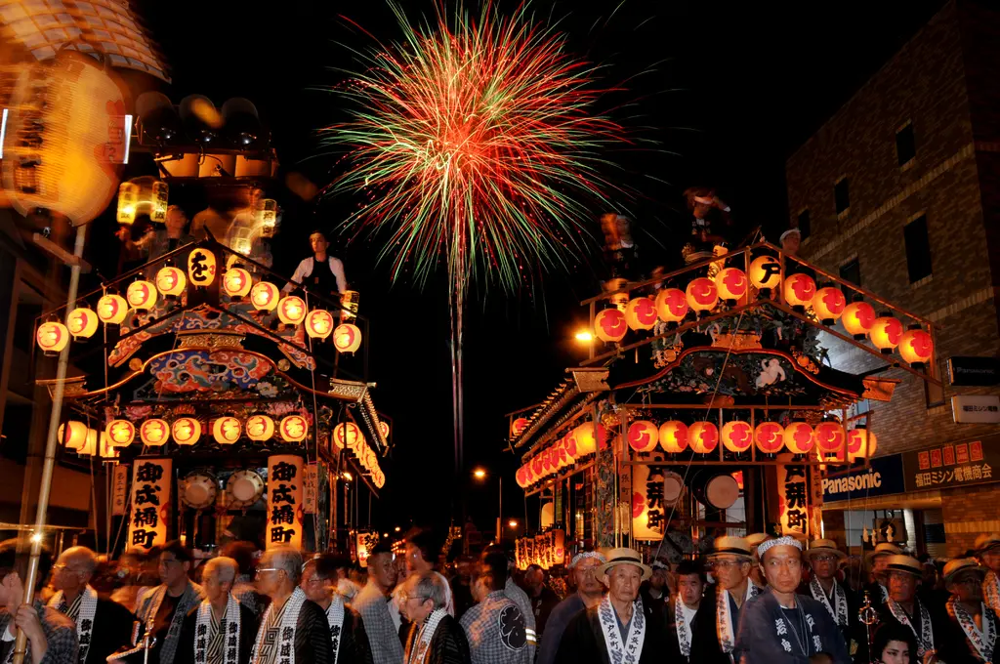
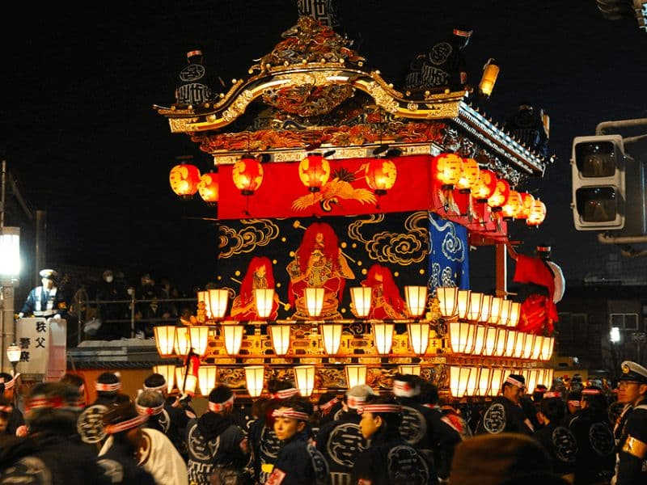
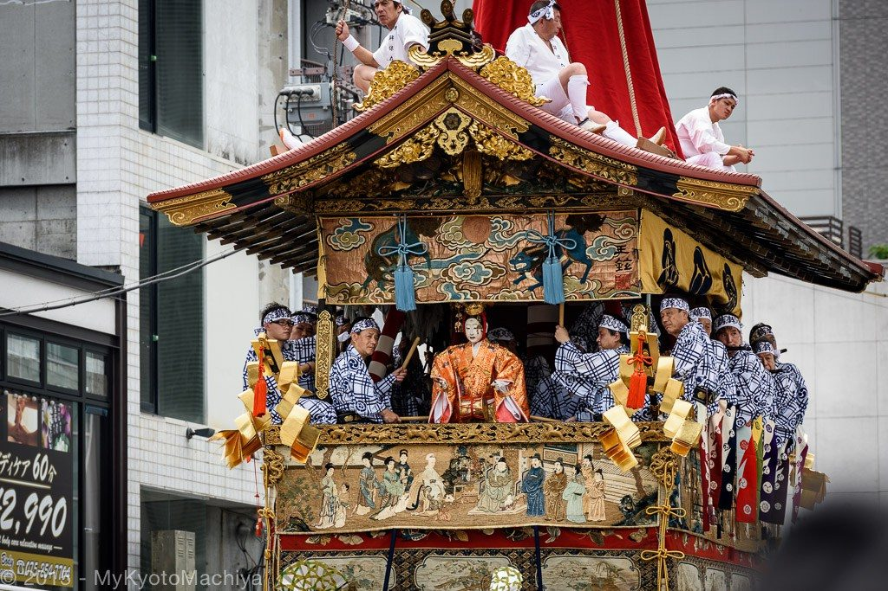
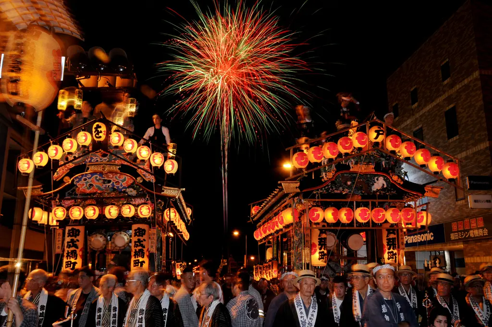

Festivais e Matsuri
O Japão é famoso por seus festivais tradicionais, conhecidos como matsuri, que ocorrem durante todo o ano.
Cada região possui costumes e celebrações próprias, muitas vezes relacionadas a colheitas, mudanças sazonais ou eventos históricos.
Entre os mais conhecidos estão o Gion Matsuri em Kyoto, o Nebuta Matsuri em Aomori e o Tanabata, que celebra o encontro lendário das estrelas Vega e Altair.
Esses festivais são momentos de união comunitária, dança, música tradicional e gastronomia típica, oferecendo uma experiência cultural profunda.
 





Religião
No Japão, a espiritualidade está presente no cotidiano através do Xintoísmo e do Budismo.
O Xintoísmo valoriza os kami, espíritos da natureza, enquanto o Budismo foca na meditação e busca pela iluminação.
Muitos japoneses praticam ambas as tradições, participando de rituais xintoístas e cerimônias budistas, refletindo uma harmonia única entre fé, tradição e vida cotidiana.
Etiqueta
A etiqueta japonesa reflete respeito e harmonia, incluindo cumprimentos com ojigi, tirar os sapatos antes de entrar em casas e manter discrição em locais públicos.
Em restaurantes, transportes e templos, é importante não falar alto, não tocar objetos sagrados sem permissão e presentear com cuidado.
Praticar essas normas demonstra respeito e permite uma integração mais profunda na sociedade japonesa.
Idioma Básico
O idioma oficial do Japão é o japonês, rico em expressões e níveis de formalidade.
Aprender algumas palavras básicas facilita interações diárias e demonstra respeito pela cultura local.
- こんにちは (Konnichiwa) – Olá / Boa tarde
- ありがとう (Arigatou) – Obrigado(a)
- すみません (Sumimasen) – Com licença / Desculpe
- はい (Hai) – Sim
- いいえ (Iie) – Não
Mesmo o conhecimento básico abre portas para experiências autênticas no Japão e ajuda a compreender a cultura local.